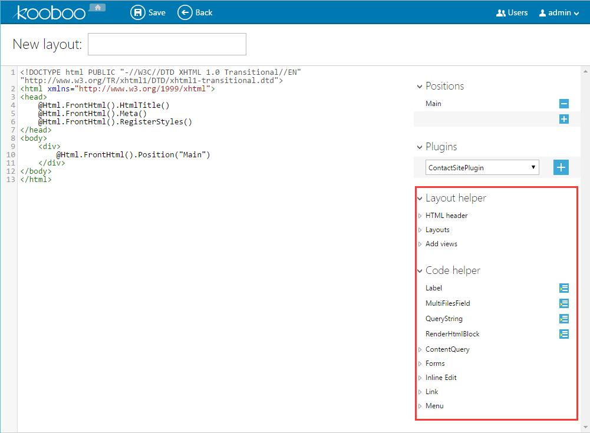
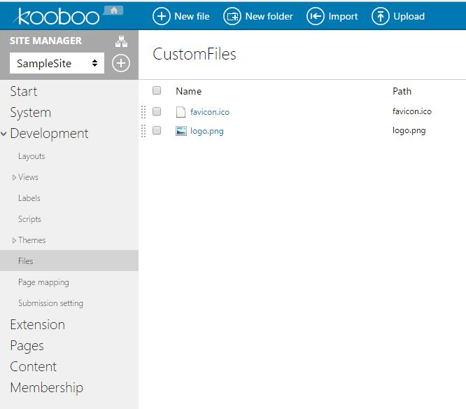
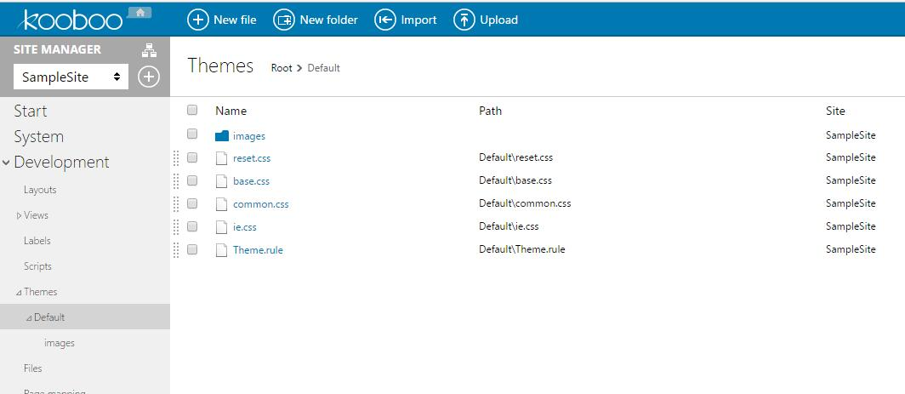
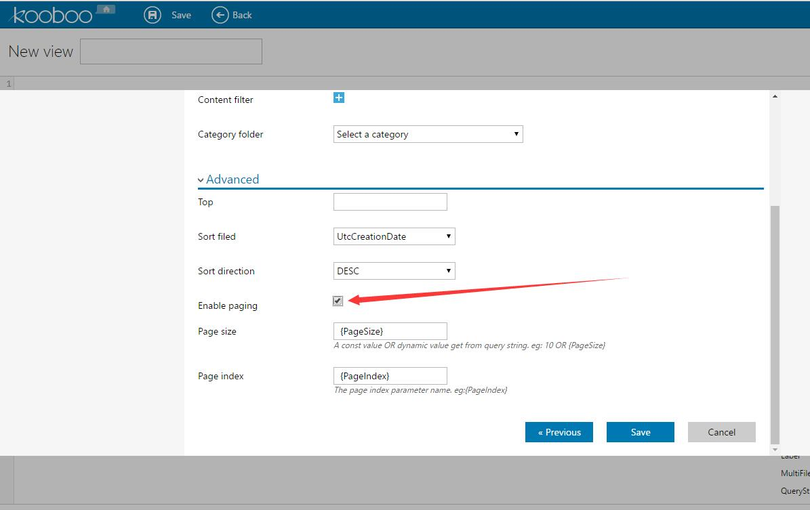
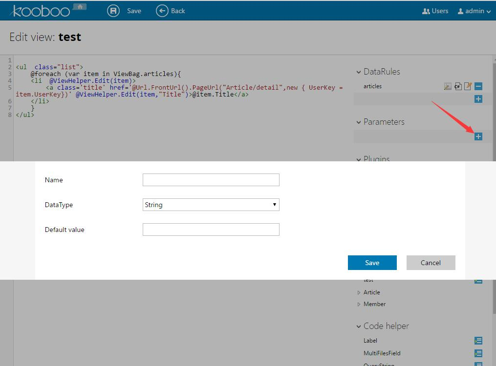
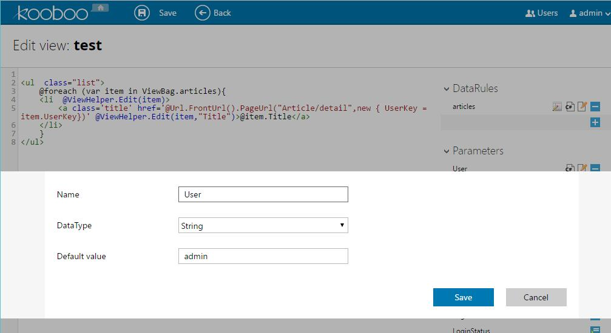
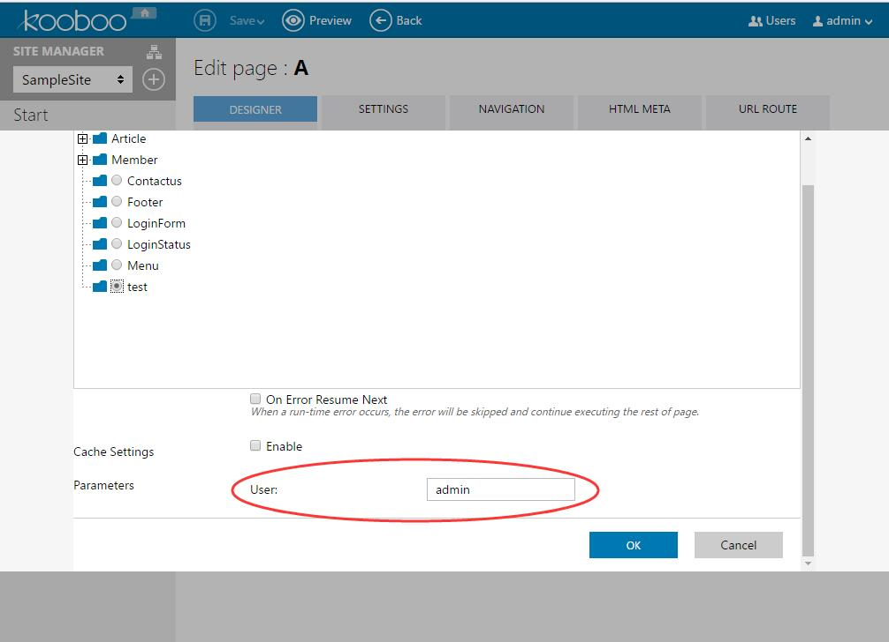
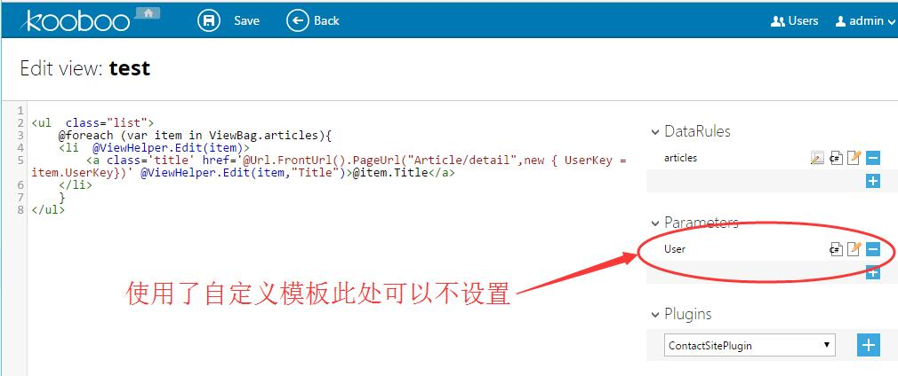

模板包含布局模板和视图模式，这两种模板加上数据查询就可以组成页面。在Kooboo CMS中，支持三种模板语法：
- Razor，在ASP.NET MVC3中提供的一种全新的模板引擎，它的最大特点是简洁和流畅。
- WebForm，早期ASP.NET开发的模板引擎。
- NVelocity，开源模板引擎，它的特点是安全性，限制性模板。只允许调用在Kooboo CMS中已开放的接口，不允许开发人员在模板上任意写代码和调用没有被公开的函数。
在模板中，主要使用类似MVC UrlHelper之类的接口来完成各种操作，接口对象主要有：
- Page_Context.Current，它会返回一个Page_Context对象，这时页面请求上下文环境对象，其作用有点类似于HttpContext.Current。开发人员可以通过这个入口得到各种请求上下文的对象。
- Url.FrontUrl()，这是在UrlHelper对象上的一个扩展方法，返回FrontUrl对象。FrontUrl的接口负责生成各种URL地址。与UrlHelper一样，它只生成URL地址，不带任何HTML标签。
- Html.FrontHtml()，这是在HtmlHelper对象上的一个扩展方法返回FrontHtml对象。FrontHtml对象负责生成和输出各种HTML标签。
为了方便开发人员使用各种接口，Kooboo CMS在模板的编辑界面的右边提供了相关的辅助代码块。同时，如果想要获得更好的智能代码提示支持，开发人人员可以用Vistual Studio打开Kooboo CMS来编辑模板。

特别说明：
在以下的示例代码中为了更好地高亮显示避免歧义，有时在引号中嵌套引号的情况下会把外层的双引号改成单引号，但实际开发中其实是不需要改成单引号的。例如：
其实在开发中是可以写成：
1. 布局模板开发
页面的布局结构由布局模板来定义，布局模板包含有HTML页面公共部分的代码，还预留有相应的占位符提供给不同的页面添加不同的内容。可以放到占位符的内容包括：View，Html block，Module，Folder，Html content。
布局模板包含由HTML代码和相关的接口组成，主要接口有：
- Html.FrontHtml().HtmlTitle()，根据当前页面的Title配置输出title标签。
- Html.FrontHtml().Meta()，根据当前页面的Meta配置输出所有的html meta标签。
- Html.FrontHtml().RegisterStyles()，输出当前站点使用的皮肤样式。
- Html.FrontHtml().RegisterScripts()，输出当前站点所有引用的脚本文件，跟样式请求的行为一样。
- Html.FrontHtml().Position(“main”)，添加一个名为“main”的内容占位符。这个占位符可以在页面中添加不同的内容。
- Html.FrontHtml().RenderView(“Footer”,ViewData)，把名为“Footer”的视图（View）添加到指定位置。
2. 视图模板开发
视图模板承担着组合HTML和内容数据的责任，开发人员查询数据，通过模板语法组合输出完整HTML内容。除了需要使用不同模板引擎的语法。
在视图模板开发时还会经常用到下面的接口：
Url.FrontUrl().PageUrl，生成页面URL地址，需要的页面参数使用匿名对象。页面分隔符可以是 “/” 或者 “~”。
<ul><li><a href='@Url.FrontUrl().PageUrl("Home")'>首页</a></li><li><a href='@Url.FrontUrl().PageUrl("About")' title="关于Kooboo CMS">关于我们</a></li><li><a href='@Url.FrontUrl().PageUrl("Articles/Detail",new{UserKey="sample-user-key-1"})'>文章详情1</a></li><li><a href='@Url.FrontUrl().PageUrl("Articles~Detail",new{UserKey="sample-user-key-2"})' title="文章详情2">文章详情2</a></li></ul>Url.FrontHtml().PageLink，生成页面链接。以下代码最终生成的与上述写法一样。
<ul><li>@Html.FrontHtml().PageLink("首页","Home")</li><li>@Html.FrontHtml().PageLink("关于我们","About",null,new{title="关于Kooboo CMS"})</li><li>@Html.FrontHtml().PageLink("文章详情1","Articles/Detail",new{UserKey="sample-user-key-1"})</li><li>@Html.FrontHtml().PageLink("文章详情2","Articles~Detail",new{UserKey="sample-user-key-2"},new{title="文章详情2"})</li></ul>Url.FrontUrl().FileUrl，生成站点下文件的URL地址。
<!--假设SampleSite中，站点配置中设置了cdn地址是cdn.kooboo.com--><!--源码--><a href='/'><img src='@Url.FrontUrl().FileUrl("logo.png")' /></a><a href='/'><img src='@Url.FrontUrl().FileUrl("logo.png",true)' /></a><!--生成结果--><a href='/'><img src='/Cms_Data/Sites/SampleSite/Files/logo.png' /></a><a href='/'><img src='http://cdn.kooboo.com/Cms_Data/Sites/SampleSite/Files/logo.png' /></a>

- Url.FrontUrl().ThemeFileUrl(“images/header-bg.png”)，生成当前站点使用皮肤目录下的文件URL地址。
 - Url.FrontUrl().ResizeImageUrl(imagePath, width, height)，生成要缩放的图片请求地址。相应的生成链接的接口是：Html.FrontHtml().ResizeImage(imagePath, width, height)
- Html.FrontHtml().Pager(ViewBag.Articles)，生成分页HTML。要支持页，ViewBag.Articles的数据查询必须配置好分页设置选项。

3. 辅助代码（Code helper）
视图模板可以配置数据查询（Data rule），配置的数据结果都会存在ViewData中，开发人可以通过ViewData[“DataName”]或者ViewBag.DataName得到查询结果对象。视图模板中查询的数据，只允许本视图模板使用，不共享给其它视图。
视图模板可以有参数配置，这些参数可以在页面使用时设置参数值。在代码中使用参数值的方法是：Page_Context.Current[“parameter1”]。

Code helper:
Label:
标签，Kooboo实现多语言以及在线编辑的一个方案，将简单的可修改的文本变成Label可以很方便进行管理。
<!-- 辅助代码： -->@("Label Text".Label())<!-- 举例 --><ul><li><a href="/">@("Home".Label())</a><li/><li><a href="/about">@("About".Label())</a><li/></ul><!-- 额外说明 -->加了Label()后的文本在登录后台的前提下访问前台页面可以实现在线编辑。除了Label()外，Kooboo CMS还提供了一个用于属性中的标签“RawLabel”。例如：<a href="/about" title='@("About us".RawLabel())'>@("About".Label())</a>此例中有两个“标签”，分别是“About us” 跟 “About”，在前台在线编辑时可以直接修改“About”的值，但是“About us”由于是在title属性中，无法在线编辑，但是这又是需要翻译的（比如中文站点中它应该显示的是“关于我们”），这里将它写成title='@("About us",RawLabel())'后，在后台中（Development/Labels）也会出现这个标签，可以在后台修改这个文本。MultiFilesField:
多文件字段，通常用于可多选的输入控件，比如图片选择器等。
<!-- 辅助代码： -->@foreach(var file in ContentHelper.SplitMultiFiles(ViewBag.Article.Images)){<img src="@file" alt=""/>}<!-- 额外说明 -->例如在可多选的图片选择器中，选择了多张图片时，数据库存储的值可能是：/Cms_Data/Contents/SampleSite/Test/image1.jpg,/Cms_Data/Contents/SampleSite/Test/image2.jpg但是我们要让图片显示出来时却需要把值拆开成两个图片地址来用。QueryString:
顾名思义，显然是用于取URL的QueryString的。
<!-- 辅助代码： -->@Page_Context.Current.PageRequestContext.AllQueryString["id"]<!-- 额外说明 -->Kooboo的View中对请求上下文做了封装，你在Kooboo的View中无法使用Request.QueryString的方式取得参数值。RenderHtmlBlock:
渲染HtmlBlock，用于在指定位置插入一个Html代码块。
<!-- 辅助代码： -->@Html.FrontHtml().RenderHtmlBlock("blockName")<!-- 额外说明 -->Html block可以在Kooboo CMS后台“Content/Html block”中管理，“blockName”为这里定义的Html block名字。ContentQuery:
内容查询，查询TextContent除了用Data rule外也可以在View中灵活地进行查询，这里以一些例子来介绍用法：
通常使用规则是：（3、4、5的顺序根据实际需求调整）
|
示例1：从 “Articles” 文件夹中查询出 “最近发布的” “5”篇 “Title” 字段包含 “Kooboo” 的文章。代码如下：
|
示例2： 从 “News” 内容类型查询 “UserKey” 字段值为 “sample-content-1” 的新闻 “最新的” “10”条 “评论”。代码如下：
|
4. 自定义参数模板
Kooboo CMS允许给View添加参数，在添加View时如果需要参数，会显示参数相关的输入框。（如下图）


有时候简单的文本输入框并不太友好，比如需要的参数是一个日期，我们更希望的是在页面中设置日期时有一个日期选择器。以SampleSite为例，可以通过以下做法：
在当前视图（View）文件夹下（/Cms_Data/Sites/Templates/Views/Article.List）添加一个名为“ParameterTemplate.cshtml”的文件（名称不可更改）。
在里面自定义自己的参数界面，这是一个View，你可以在里面做数据查询、引入脚本、引入样式等，可参考SampleSite的写法。
<table><tr><th>Test1:</th><td><input type="hidden" name="Parameters[0].Name" value="DateTime" /><input type="hidden" name="Parameters[0].DataType" value="DateTime" /><input type="text" name="Parameters[0].Value" value="" /><script type="text/javascript">$(function () {$('[name="Parameters[0].Value"]').datepicker();});</script></td></tr><tr><th>Test2:</th><td><input type="hidden" name="Parameters[1].Name" value="String" /><input type="hidden" name="Parameters[1].DataType" value="String" /><input type="text" name="Parameters[1].Value" value="" /></td></tr></table>
注意:
定义一个参数需要三个表单控件，比如本例中Test1：
<!--用于定义参数名为“DateTime”--><input type="hidden" name="Parameters[0].Name" value="DateTime" /><!--用于定义参数类型为“DateTime”--><input type="hidden" name="Parameters[0].DataType" value="DateTime" /><!--用于接收参数值输入，定义一个文本框--><input type="text" name="Parameters[0].Value" value="" /><!--使用jquery datepicker插件将文本框变为日期选择器--><script type="text/javascript">$(function () {$('[name="Parameters[0].Value"]').datepicker();});</script>如果使用了自定义模板，在View界面中可以不设置“Parameters”，有哪些参数由自定义模板决定。
